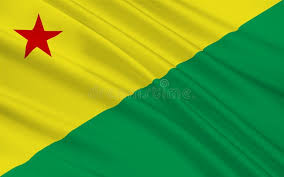

Acre
Acre é um estado no noroeste do Brasil, na Floresta Amazónica. É conhecido pela quantidade de árvores-da-borracha e castanhas-do-brasil. Na fronteira peruana, a oeste, o Parque Nacional da Serra do Divisor possui montanhas elevadas e várias quedas de água, além de diversas espécies animais, como tatus-gigantes, tapires e aves raras. A sudeste, encontra-se Rio Branco, a capital do estado, nas margens do rio Acre.

O Acre só integrou o território brasileiro a partir de 1903, quando foi anexado após o movimento que ficou conhecido como Revolução Acriana. O movimento ocorreu entre 6 de agosto de 1902 e 24 de janeiro de 1903, após a disputa pelo controle da exploração de seringais na região.
Em 1912, o Acre foi decretado território federal e o controle era exercido por um governador nomeado pela Presidência da República. Passou à condição de Unidade da Federação somente em 1962.
Capital: Rio Branco
População: 830.018 (2022)
Área: 152.581 km²
Clima: equatorial Af, Am
Cód. ISO 3166-2: BR-AC
Economia: 2021
Fuso horário: horário do Acre (UTC-5)
"A cultura do Acre é baseada nas tradições folclóricas dos povos indígenas que habitam a região e influenciaram de maneira direta na constituição dos hábitos culturais dos acrianos. Além disso, percebe-se a influência da cultura de outros estados brasileiros, principalmente do Norte e do Nordeste.
O artesanato acriano é produzido com elementos da floresta, em especial, cipós, sementes e madeiras. Já a culinária é marcada pelo uso de peixes e ervas amazônicas. A cultura do Acre é fortemente marcada, ainda, pela defesa da floresta, sendo o estado um dos mais preservados em termos ambientais do Brasil. A figura de Chico Mendes, lendário defensor da preservação ambiental no Acre, foi uma das mais proeminentes na defesa da natureza e da cultura acriana.